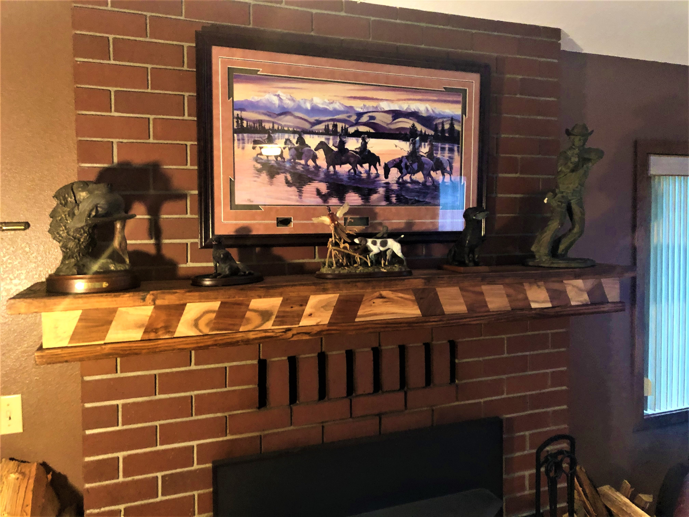
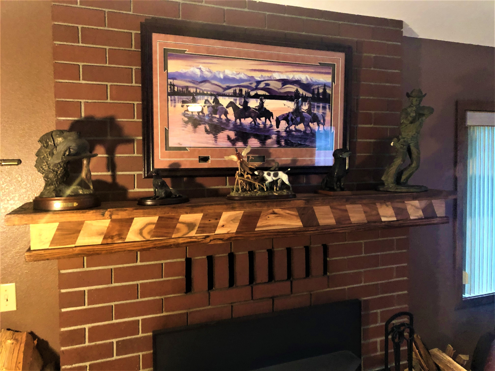

Crescent Moon Wall Art


Crescent Moon Shelf
After a refresher course in geometry, the design was simple.
3D modeling was all but necessary for ensure the pieces would properly fit together.
Thanks to a few hours in Sketchup I was able to generate a cutlist.
Assembly of the overlapping dodecagons proved to be a monster of it's own.
A roll of masking tape, and half a bottle of wood glue later; all it took was some distant perspective and scrupulous skewing to get the shape correct.
The mountains make a great bookshelf, and the rest of the inner shelving can hold knick knacks to the hearts desire.
If you find yourself with open wallspace, it makes a beautful addition to any room.
Cutlist and 3D Model Available
Inset Floating Mantel

 

Floating Mantel
Adding a bit of contrast to the plain red brick chimney was long overdue.
Unfortunately, this one came just too late to give the stockings proper time to drape from, but in the meantime the collection of bronze statues will suit it well.
The pine frame and pine top are accented with strips cut from leftover hardwood flooring to form a chevron-esque pattern in the front, which adds a nice variety in color. It certainly pops in contrast to the brick fireplace.
Sho Sugi Bahn Mountain Shelf


Built to Fit
Covering up the existing, single brick deep "mantel" if you could even call it that, was a joy for sure
Unfortunately, this one came just too late to give the stockings proper time to hang on, but in the meantime the collection of bronze statues will suit it well.
The pine frame and pine top are accented with strips cut from hardwood flooring to form a chevron-esque pattern in the front, which adds a nice variety in color, and certainly pops in contrast to the brick fireplace.